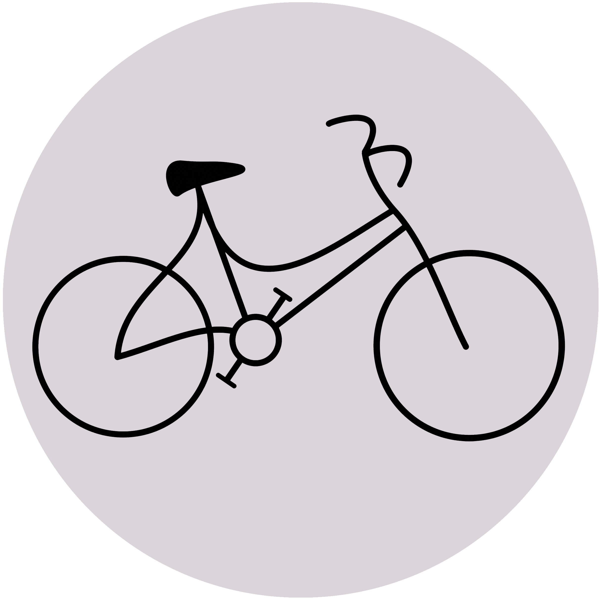
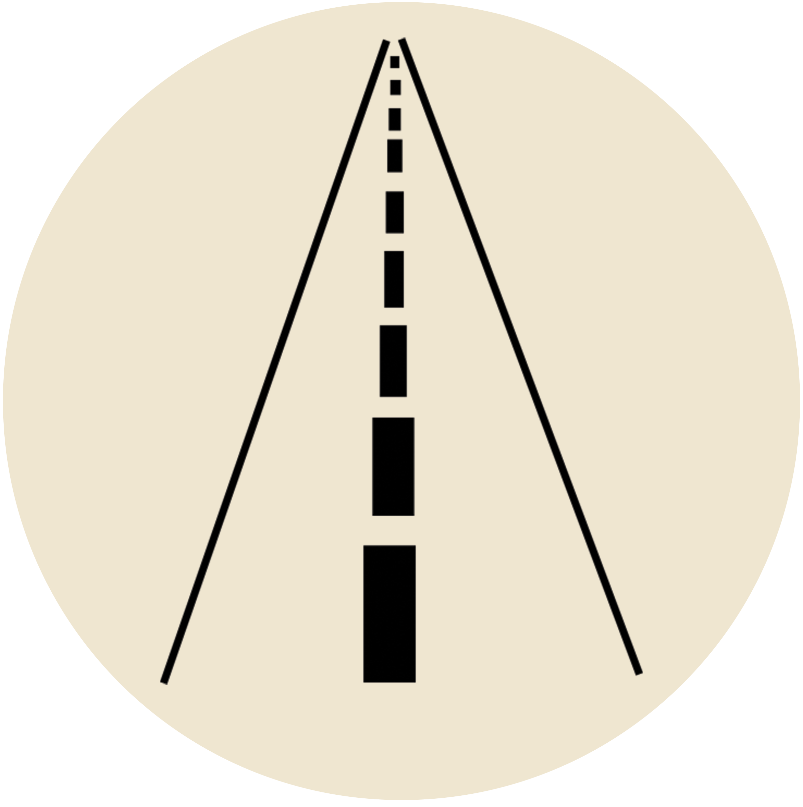

Interests
(UPDATED SEPTEMBER 2020)

Cycling
Like many, I stopped using public transportation when the pandemic started.
Now, I get around by bike.
I am fortunate to live in a city with an extensive bike lane network, but there is always room to be safer. Relatedly...

Street Safety
Since August, I’ve volunteered for Somerville’s Shared Streets initiative.
I’m passionate about keeping my city’s streets safe for all as we try to navigate this scary time.
(Note: opinions expressed on this website are my own, not representative of any organization or initiative, including Shareds Streets.)
Chinese
I’ve taken advantage of the increased free time the pandemic affords me to revisit Mandarin, which I first encountered at Northeastern University.
It’s a difficult language to study alone!
So far, I have used Rosetta Stone and Duolingo. I am very open to suggestions, so let me know what’s worked for you.
School & Work
(UPDATED SEPTEMBER 2020)
Harvard Extension School
I am currenctly in the process of finishing my prerequisites for the Master of Liberal Arts (ALM) in Extension Studies, Field: International Relations. So far, I have completed two classes:
• International Organization
• Proseminar: Introduction to Graduate Studies and Scholarly Writing in the Social Sciences Government and History
I earned my Bachelor of Arts degree in Journalism from Northeastern University.
Belfer Center
Since June 2019, I have worked as the Digital Communications Coordinator at the Belfer Center for Science and International Affairs.
Previously, I have worked at Massachusetts General Hospital, SFGATE, MSN Money, The Boston Globe, and GateHouse Media New England.
(Note: opinions expressed on this website are my own, not representative of any organization or initiative, including the Belfer Center.)